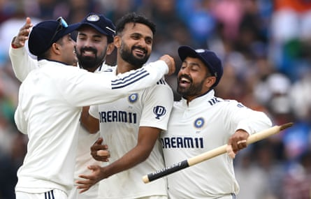

It was raining hard in Birmingham on Sunday morning. A weight of great black clouds broke over the city while it was feeling its way into the day. On the streets people pressed themselves together under the cover of bus stops and awnings: revellers off to the Queens Heath pride festival, heavy metal lovers making their way home after Black Sabbath’s farewell gig at Villa Park the previous evening, and cricket supporters bound for the ground, most of them with last-minute tickets, split between anxious Indian and wry English fans, the only people in the city who were happy enough to be getting wet.
The bad weather was about the only way England were going to get out of this match with a draw. A team who have spent three years learning how to do the improbable were in no position at all to attempt the unremarkable and bat out the match, even after the rain had washed out the first hour and a half of the day.
Their attempt to play out the remaining 80 overs of the game was as good as up by the lunch break, broken by a superb spell of fast bowling by Akash Deep, who had played only seven Tests before this, but is 28 and has spent years in Indian first-class cricket learning how to get every last bit out of unhelpful pitches such as this one.
Deep took as many wickets in this match as England’s four quicks managed between them and gave them one long lesson in how to bowl in their own conditions. He produced more good balls in his first spell on Sunday than they had between them in the match. One of them got Ollie Pope, dismissed playing the sort of janky defensive shot that makes people question his spot in the order all over again, and another did for Harry Brook, who was beaten by a jaffa that nipped back off a crack and smacked into his thigh bone.
So in came Ben Stokes , England’s last hope now the clouds had blown over. Strange to say about a man who’s performed so many wonders, but it felt like no hope at all. Stokes is just the sort of man you might hire to slay the Nemean lion, but it’s less obvious that he’s the one you would send in with a shovel to muck out the Augean stables.
Time was when he could do it for you. It’s easy to forget, among everything else he’s done for England, that he’s played a series of rearguard innings over the years for captains before him, 66 off 188 balls against New Zealand in 2018, 62 off 187 against India at Trent Bridge later that same year.
But anyone who’s watching knows those days are a way behind him. On Sunday, Stokes managed just over 90 minutes of batting. There was one of those familiar pull shots against Prasidh Krishna, like a lumberjack making the last cut on a California redwood, and a couple of crisp glances to fine leg, but that was about the best of it.
He was, he always is, bamboozled by Ravindra Jadeja’s way of bowling into the rough outside off stump. It’s like watching a grizzly bear try to solve a Rubik’s Cube. He was eventually done, in the last over before lunch, by one of Washington Sundar’s innocuous off-breaks.
Akash Deep (centre) produced a superb spell of fast bowling to lead India to victory.Photograph: Stu Forster/Getty Images
Stokes has such a big influence as captain that it goes almost unnoticed that he has so little influence as a batsman. He has made one century in the past three years, and that was a bar-room brawl in a losing cause against Australia at Lord’s, when he was furious that Alex Carey had run out Jonny Bairstow.
Since then, he’s scored six fifties in 33 innings, none bigger, or better, than the 80 he made in the first innings of an English victory in Christchurch last November. His batting average was 39 in the first year of his captaincy, but was 28 last year and is just 19 in this one.
Among all the other records Shubman Gill set this week, he outscored Stokes by 397 runs in the match, which is the largest gap between two captains in the history of Test cricket. Gill, of course, doesn’t have to do any of his team’s bowling. Stokes was superb with the ball at Headingley just last week.
For all the hard work he’s put into that over the past 12 months, you wonder how he would be batting now if he had been willing, or able, to put the same sort of time into the other side of his all-round game. He didn’t play at all for Durham this year and, aside from his England commitments, he’s had exactly one red ball innings in the past year.
It’s asking a hell of a lot of him to bat as well as he bowls, and bowl as well as he leads, but that’s what England need.